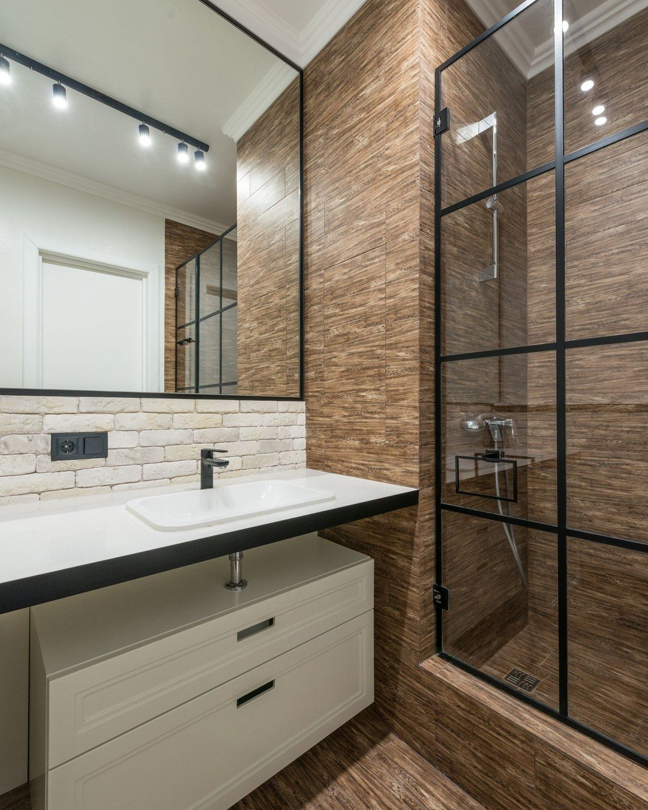
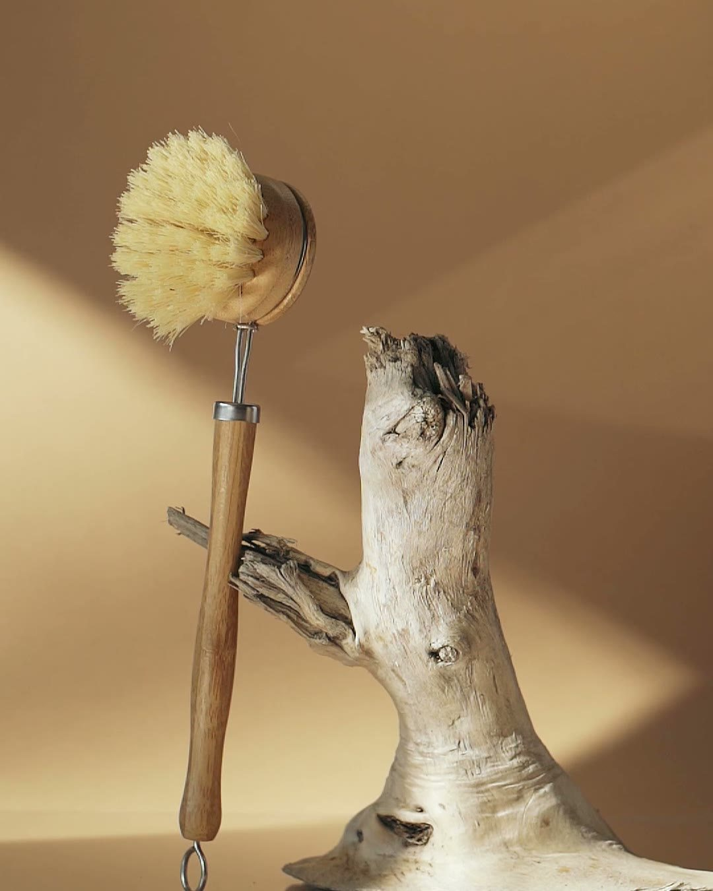
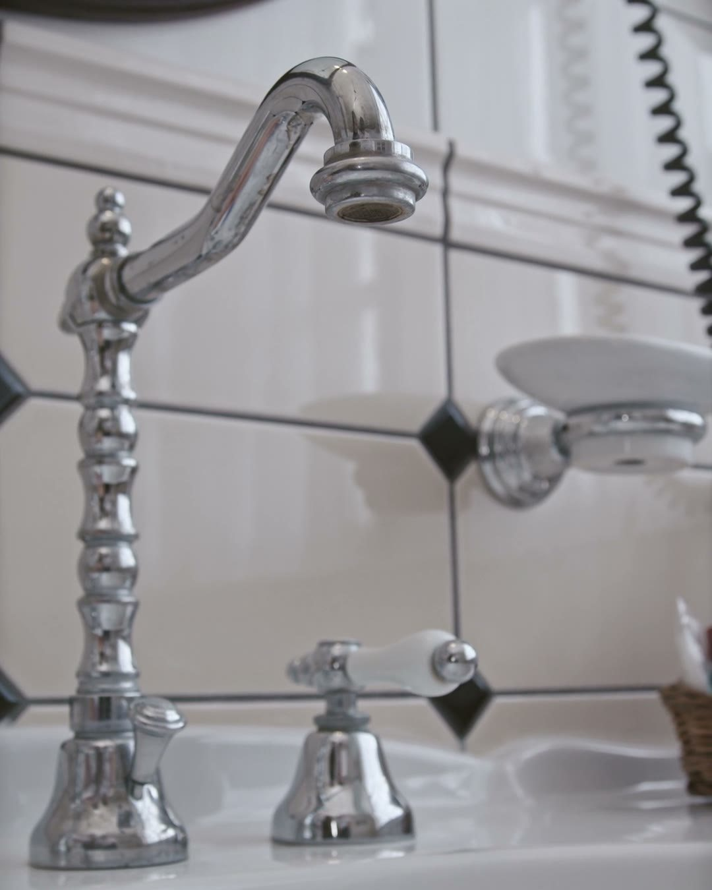
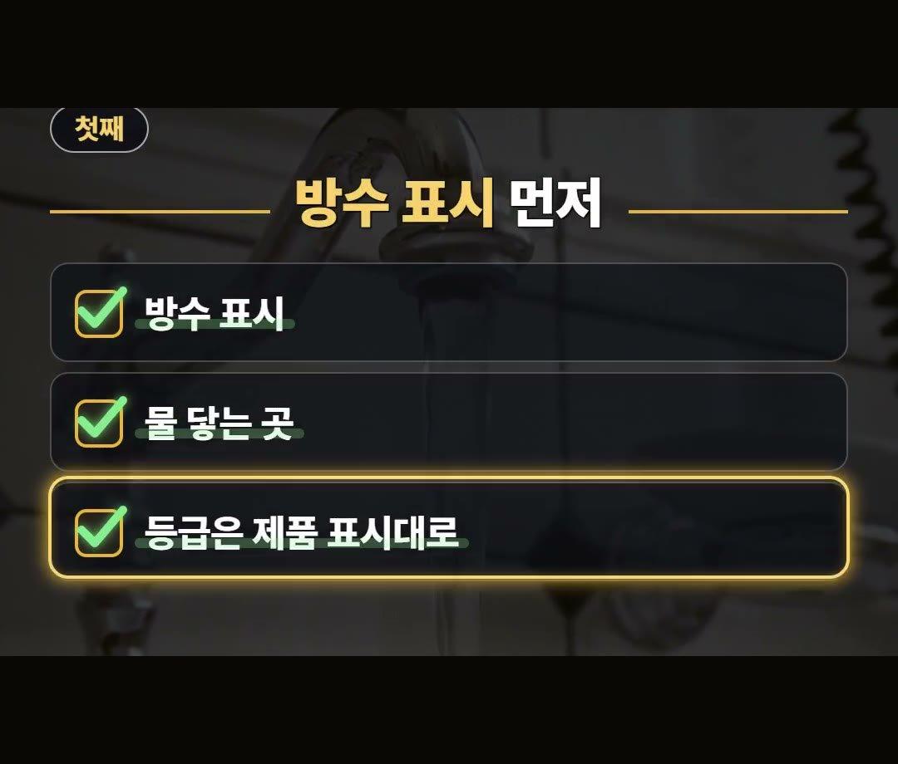
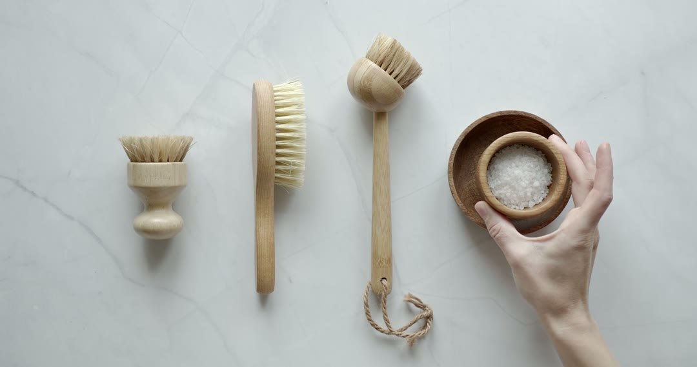
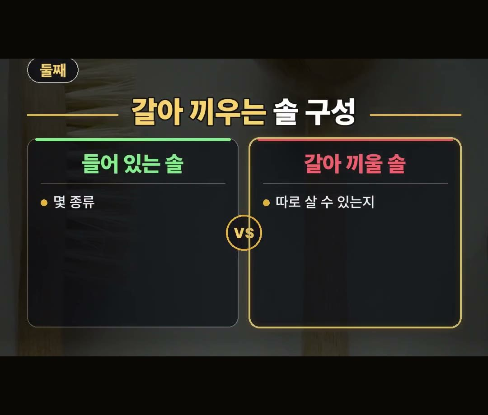
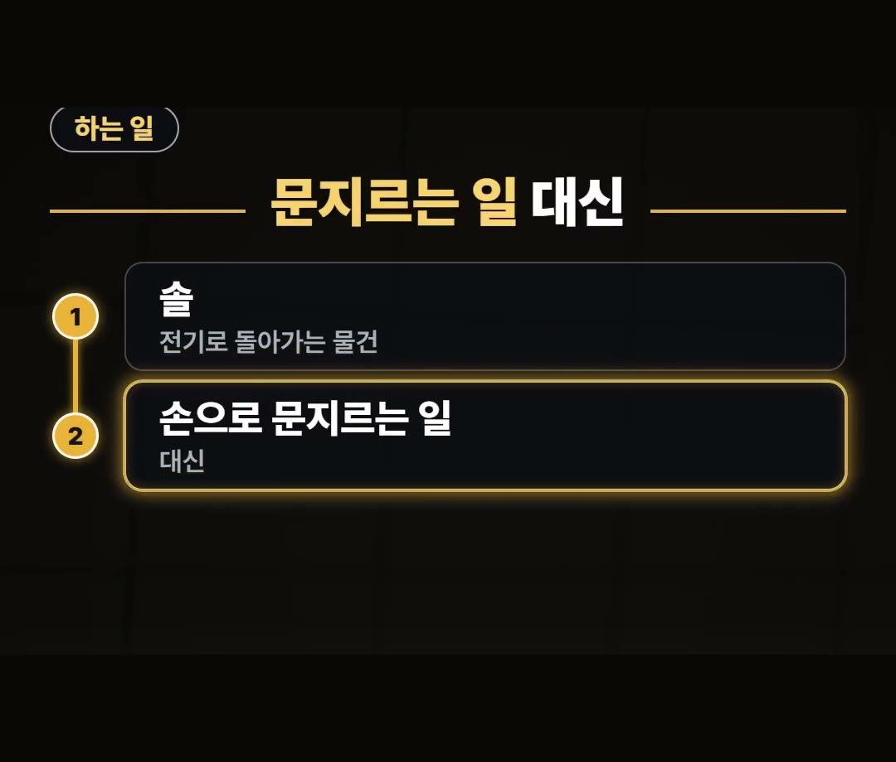
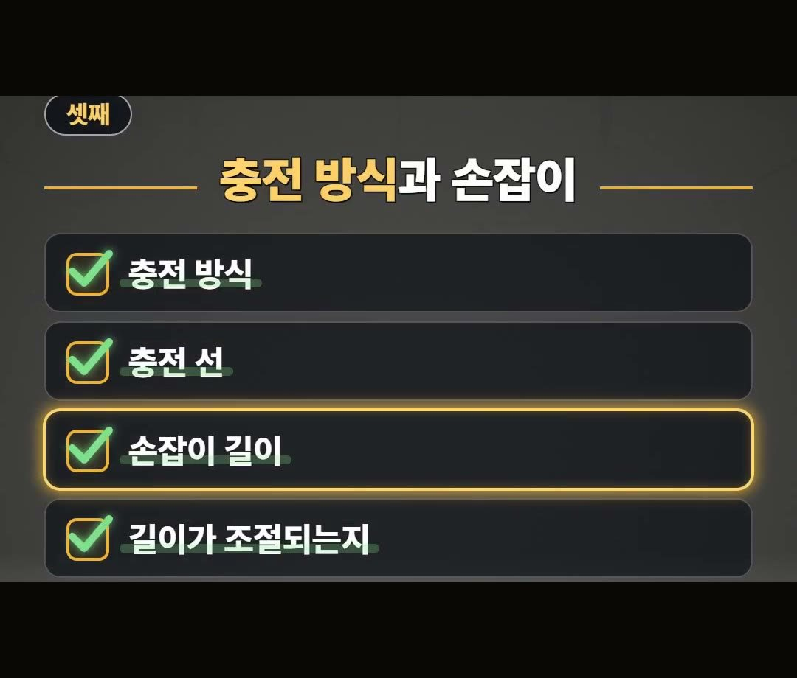

전동 청소솔 추천 사기 전에 방수 표시와 구성부터 체크하세요
※ 이 글에는 제휴 링크가 포함되어 있으며, 링크를 통해 구매하시면 일정 수수료를 받을 수 있습니다. (가격은 같습니다)
※ 이 포스팅은 쿠팡 파트너스 활동의 일환으로, 이에 따른 일정액의 수수료를 제공받습니다.

전동 청소솔을 구매하기 전에는 솔이 도는 방수 표시와 구성 요소를 먼저 확인하는 것이 좋으며, 구체적인 선택 기준은 본문에서 차근차근 전해 드리겠습니다.
안녕하세요!
돈 아끼는 연구소의 아낌 소장입니다.
전동 청소솔 고를 때 방수 표시부터 체크하는 것 잊지 마세요! 💡

전동 청소솔이란 어떤 물건일까요?

전동 청소솔 추천 제품을 찾아보시다 보면 어떤 물건인지 궁금해지곤 합니다.
전동 청소솔은 솔이 전기로 돌아가는 물건입니다.
손으로 직접 문지르는 일을 대신하도록 나온 물건이에요.
고를 때 볼 기준 1: 방수 표시 먼저 확인하기


솔이 도는 모습만 보고 장바구니에 담기 쉽습니다.
그런데 물 닿는 자리에서 쓸 물건이라, 표시를 놓치면 다시 사게 됩니다.
사기 전에 볼 3가지 중에서 첫째는 방수 표시입니다.
물 닿는 곳에서 써도 되는지 상품 설명에 나옵니다.
등급은 제품 표시대로 보면 됩니다.
고를 때 볼 기준 2: 갈아 끼우는 솔 구성 살펴보기


둘째는 갈아 끼우는 솔 구성입니다.
솔이 몇 종류 들어 있는지 살펴보는 것이 필요합니다.
추가로 솔만 따로 살 수 있는지도 같이 보셔야 합니다.
고를 때 볼 기준 3: 충전 방식과 손잡이 길이 확인하기


셋째는 충전 방식과 손잡이 길이입니다.
상품 설명에서 아래 요소들을 확인하면 좋습니다.
- 충전 방식 관련: 충전 선이 들어 있는지
- 손잡이 관련: 손잡이 길이가 조절되는지
쭈그려 앉기 싫은 집이면 손잡이 길이가 먼저입니다.
물 닿는 자리에서 쓰는 만큼 방수 표시, 갈아 끼우는 솔 구성, 충전 방식과 손잡이 길이를 상품 설명에서 먼저 보는 까닭을 잘 기억해 두세요.
정리
- 전동 청소솔 추천 상품을 사기 전에는 물 닿는 곳에서 써도 되는지 방수 표시와 등급을 제품 표시대로 확인합니다.
- 들어 있는 솔이 몇 종류인지, 솔만 따로 살 수 있는지 갈아 끼우는 솔 구성을 살펴봅니다.
- 충전 선이 들어 있는지, 쭈그려 앉기 싫은 집인지에 따라 손잡이 길이가 조절되는지 체크합니다.
최저가 링크는 아래에 모아 두었어요.
📌 2026년 10월 기준 정보예요. 가격은 시기에 따라 달라질 수 있어요.
영상 화면: Pexels (Chandresh Uike, KATRIN BOLOVTSOVA, Mikhail Nilov, Monstera Production, Polina ⠀, Tima Miroshnichenko)
사진: Pexels (Max Vakhtbovych)